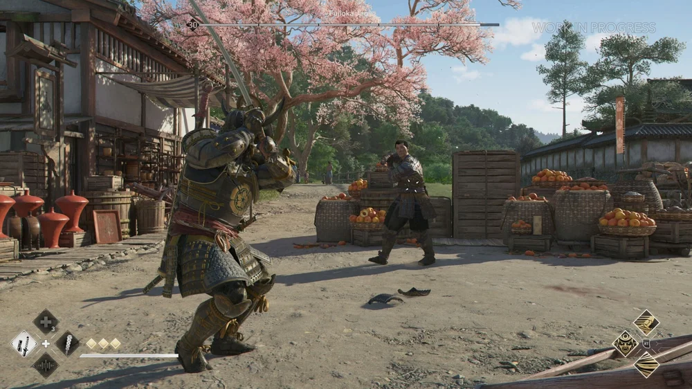

Assassin’s Creed Shadows: Japão Feudal e Dupla Protagonista Marcam Nova Fase da Franquia

Assassin’s Creed Shadows é o capítulo mais aguardado da franquia em anos — e finalmente atende ao pedido antigo dos fãs: explorar o Japão feudal. Com uma ambientação rica em cultura, política e conflitos históricos, o game traz dois protagonistas jogáveis: Naoe, uma assassina shinobi, e Yasuke, um samurai baseado em uma figura real.
A dinâmica entre os dois personagens permite ao jogador alternar entre abordagens furtivas e combates frontais brutais. O sistema de clima dinâmico e ciclo de estações impacta diretamente na jogabilidade, tornando cada missão única. Além disso, o mapa é vasto, vertical e denso, com cidades, vilarejos e castelos repletos de atividades secundárias.
A Ubisoft também reformulou a IA dos inimigos e o sistema de parkour, oferecendo fluidez e imersão como nos tempos áureos da série. Assassin’s Creed Shadows representa não apenas uma nova ambientação, mas um novo padrão técnico e narrativo para a franquia.